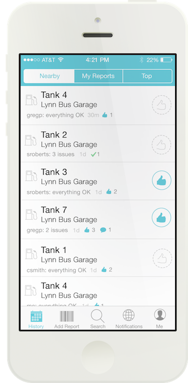
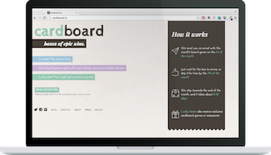

Crowd Comfort
2013-2014

Cardboard
2013
2013-2014
2013
Freelance designer and prototyper.
Designed iOS app and responsive web app, prototyped for usability tests, and facilitated user interviews and usability tests as the only user-centered designer.
Took a sabbatical from school with cofounders to develop a collaborative online workspace for students.
Studied user-centered design, distributed engineering design, software design.